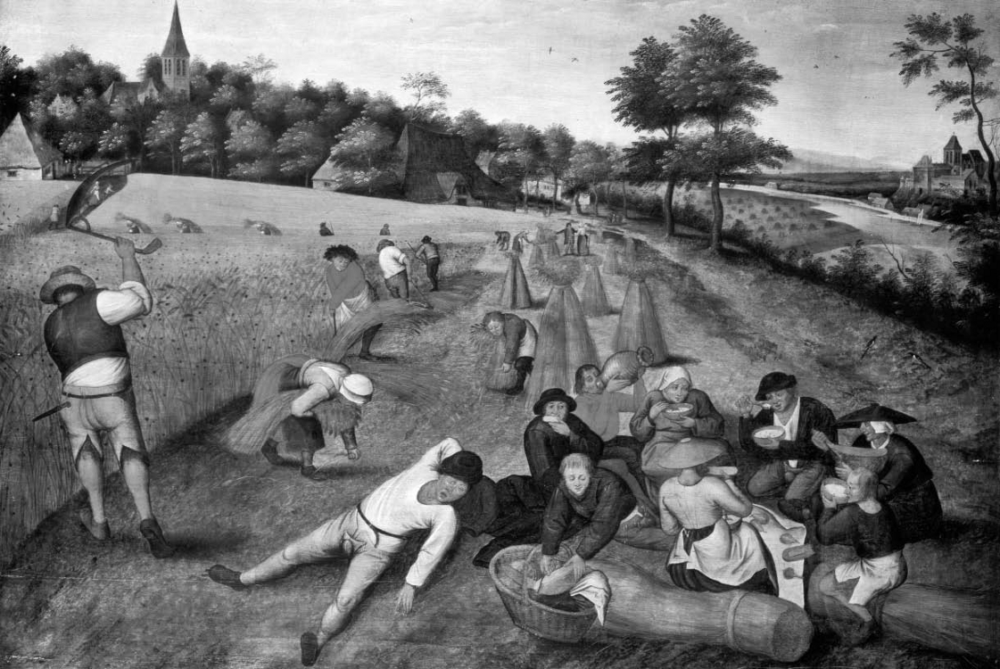
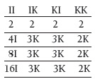

Birey ve grup
“Demir Leydi” lakabıyla da tanınan İngiltere eski Başbakanı Margaret Thatcher bir defasında toplum diye bir şey olmadığını söylemişti. Bunu kendi eylemlerinin sorumluluğunu üstlenen, devletten yardım almayı küçümseyen, bağımsız, kendini yaratan, kendine güvenen bireyi övmek için söylüyordu.
Toplum, ya da en azından ideal toplum, bu toplumsal atomların yığınından başka bir şey olmayacaktı. Bu da bu atomik faillerin öz çıkarlarından doğan ve özgürce kabul ettikleri bağlar dışında hiçbir karşılıklı bağlılığın olmaması anlamına gelecekti.
Toplumsal Gerçekler
Toplumsal bağların ne kadarı birbirimizle etkileşimimizden doğar? Dil, para ve yasa varlıkları ve işlevleri topluma bağlı olan toplumsal kendiliklerdir. Herhalde Thatcher İngiliz dilinin, poundunun ya da yasalarının varlığını (özellikle de ilk ikisinin, yönettiği rejimin öncelikleri arasında yer aldığını düşünürsek) reddetmek istemedi. Ama eğer iletişim, para ve yasa çıkarcı bireylerin etkileşimlerinden ortaya çıkabiliyorsa, yardımsever topluluklar, yoksullara yardım etmek için zenginleri vergilendiren refah devleti de benzer şekilde ortaya çıkamaz mı? Ama bunlar tam da Thatcher’ın karşı çıktığı şeylerdir. Belki de bunun nedeni onun ne kadar özgüvenli olsak da yaşamımızın her çağında (çocukluğumuzda, yaşlılığımızda ve ikisi arasında kalan dönemlerde) birbirimize ne kadar ihtiyacımız olduğunu unutmasıdır.
Toplumu bireyler yığınından bir şekilde gizemli bir şekilde ortaya çıkan gizemli bir “şey” olarak hayal etmenin çekici bir yönü olabilir. Ama bu anlayış makul, pratik sağduyulu düşüncenin toplum diye bir şeyin olup olmadığından şüphelenmesine yol açmaktan daha öte bir resim sunmaz. Aslında bu, soyut isimlerin bizi yanıltmasından başka bir şey değildir. Daha az gizemli bir anlayışa ulaşmak için toplumsal ilişkileri bireylerin etkileşiminin sonucu olarak görmeliyiz. Bu ilişkiler ne tür ilişkileri içerir? İletişim ilişkilerini içerir, bunun için dile gerek duyarız; ürünlerin ve hizmetlerin değiş tokuşunu içerir, bu da ticari ilişkileri ve parayı gerektirir; davranışları yönlendiren kuralları ve bunları çiğneyenlere karşı yaptırımları içerir, bunun için de yasalar gerekir. Böylece göz önüne almamız gereken sadece bireyler kalabalığı değil, bireyleri karmaşık bir ilişkiler ağıyla birbirine bağlayan yapılardır. Toplum derken kastettiğimiz tam da budur.

HASATÇILARIN ÖĞLE YEMEĞİ
Pieter Brueghel/Genç Brueghel (yak. 1564-1638)
Kâğıt Üzerinde Kalan Sözleşme
Peki, toplum nasıl ortaya çıkar? Neden toplumsal ilişkilerin zorlu bir sürecin sonucu olduğunu düşünüyoruz? Bunun en önemli nedeni sürece tersinden, yani başarısız ulus devletler ve toplumsal yıkım örneklerinden hareketle bakmamızdır. Toplumsal yapılar kırılgandır, çökmeye meyillidir. Bu da onların korunması ve sürdürülmesi sorununu her şeyden daha önemli hale getirmektedir.
Bu anlayışı öne çıkaran klasik analiz Thomas Hobbes’a aittir. Hobbes bireylerin birbirlerine toplumsal bağlarla bağlanmadığı bir “doğa durumu” varsayımından başlar. Ama bu durumu hiç de Thatcher gibi bir cennet olarak düşünmez. Doğa durumunda herkes herkese karşı savaş halindedir ve “insan hayatı yalnız, yoksul, kötü, vahşi ve kısa sürer.” İnsanlar kendilerini bu korku durumundan nasıl kurtarabilirler? Hobbes hiç de inandırıcı olmayan iki hamlede bulunur. İlkin, bu bireylerin bir araya gelerek ortak bir politika geliştirmeye karar verebileceğini varsayar. Sonra, onların ortak kararının bir egemene baş eğmek, yani gönüllü bir şekilde iktidarı tek bir elde toplamak olduğunu ve bu egemenin de iktidarını onların yararına kullanacağını düşünür. John Locke’un bu ikinci aşamaya dair iyi bilinen yorumunu bir kez daha hatırlatmakta yarar var:
Sanki insanlar, Doğa durumundan vazgeçerek topluma girdiklerinde, biri dışında hepsinin yasaların kısıtlamaları altında olmasında anlaşıyorlar; bu biri ise artan gücü, cezadan muaf ahlaksızlıklarıyla Doğa durumunun tüm özgürlüğünü hâlâ muhafaza edebiliyor. Bu, insanların kokarcaların veya tilkilerin kendilerine verebilecekleri kötülüklerden sakınmaya çalıştıkları halde aslanlar tarafından yenilmekten memnun olacak kadar aptal olduklarını düşünmektir.
Ama felsefi açıdan daha ilginç sorun aslında ilk aşamada ortaya çıkar. Hobbes bireylerinin bir sözleşme yapabileceğini nasıl düşünebiliyor? Aslında o da bu sorunu açıkça görmüştür:
Herkesin herkese karşı savaş halinde olduğu basit doğa durumunda… Bir ahit yapılırsa, bu ahit herhangi bir makul şüphe halinde geçersizdir… Çünkü ilk önce ifa eden taraf diğer tarafın daha sonra ifa edeceğinden emin olamaz; sözlerin bağları insanların hırsına, tamahına, öfkesine ve diğer tutkularına gem vuramayacak kadar zayıftır… dolayısıyla, ilk önce ifa eden, kendini düşmanın ellerine bırakmakla kalır.
Benim silahlarımı bırakmamın asgari koşulu senin de silahlarını bırakacağına güvenmemdir. Eğer senin sözün üzerine senin için bir şey yapacaksam, en azından senin de buna karşılık vereceğine güvenmem gerekir. Ama bu güven doğa durumunda yoktur.
Eğer Hobbes’un varsaydığı gibi kendi çıkarından başka bir şey düşünmeyen insanların yaşadığı bir doğa durumunun varlığını kabul edersek, asgari bir toplumsal ilişkinin kurulması ve sürdürülmesi sorunu çözümsüz kalacaktır. Asgari bir toplumsal ilişki karşılıklılık ilkesine dayanır. Ben geçici olarak kendi çıkarlarımın bir kısmını feda ederek bir başkası için bir şeyler yaparım. Ama bunu yaparken beklentim bir gün onun da en azından benim yaptığıma eşdeğer bir şey yapacağıdır. Karşılıklılık da güvene dayanır (bütün sabahı senin pirelerini ayıklamakla geçirirken karşılık olarak senin de benim için aynısını yapacağını beklememek tam bir enayilik olur) ama Hobbes’un toplumunda bu güvenceyi sağlayacak hiçbir şey yoktur. Denildiği gibi “sözlü vaat sözde kalır.” Ama Hobbes’un toplumunda “yazılı vaat bile sözde kalır.”
İşbirliğinin Evrimi
Hobbes’un sorunuyla insanların hiç karşılaşmadığını düşünebiliriz. Doğa durumu diye bir şey hiç olmadı; bizler Hobbes’un varsaydığı gibi bencil canavarlar değiliz (insan doğası ve ahlaki güdülenme üzerine daha fazla bilgi için sırasıyla bkz. İnsan Doğası Nedir? ve Neden İyi Olmalı?). Ama konuya evrimci bakıştan yaklaştığımızda bunun sorunu ertelemekten başka bir şey olmadığı düşünülebilir. Şayet kendi uygunluklarını başkaları uğruna feda eden canlılar Darwinci türünü sürdürme savaşının kaybedenleriyse, diğerkâmlığın ortaya çıkışı bizim için hâlâ bir sorun olmaya devam edecektir. İnsanın kısmen diğerkâm bir canlı olduğunu söylemek rahatlatıcı olabilir, ama biyolojik teori böyle bir canlının varlığını reddediyorsa bu sorunla yüzleşmemiz gerekir.
<>
Vahşi mücadele ormanında “iyi çocuklar”ın sona kaldığı
söylenir. İşbirliği kaybedenler içindir.
<>
Diğerkâmlığın ortaya çıkışını açıklamak için genellikle basit oyun modelleri kullanılır. Bunların en ünlüsü “tutuklu ikilemi”dir. Bu tür bir durumda işbirliği içinde hareket etmek toplumsal olarak en iyi seçenektir. Ama her birimiz bu işbirliğinden kaçıp kendi çıkarımız için en iyi olan seçeneği de izleyebiliriz. Özgün öyküde bir sorgu yargıcıyla aynı suçla suçlanan Âdem ve Havva adında iki şüpheli vardır. Sorgu yargıcı her birine şu seçenekleri sunar: Eğer sen suçunu itiraf edersen ve o da itiraf ederse her biriniz ikişer yıl ceza alacaksınız; eğer sen itiraf edersen ama o etmezse sen mahkemeye yardım ettiğin için serbest kalacaksın; eğer sen itiraf etmezsen ama o itiraf ederse sen üç yıl ceza alacaksın; eğer sen itiraf etmezsen ve o da itiraf etmezse her biriniz birer yıl ceza alacaksınız. Âdem ve Havva hangi seçeneği seçmelidir? Kendi çıkarlarını düşündüklerinde Âdem ve Havva’nın itiraf etmeyi seçmeleri doğru olacaktır: Diğeri ne yaparsa yapsın sizin için itiraf etmek en iyisi olacaktır. Ama ikisi de aynı stratejiyle hareket ederlerse toplamda en kötü sonuçla karşılaşacaklardır (sessiz kalmaları halinde toplamda sadece iki yıl ceza alacaklarken ikisi de itiraf ederek toplamda dört yıl ceza alırlar).
Birçok gerçek hayat durumunu işe daha fazla kişinin dahil olduğu “tutuklular ikilemleri” gibi düşünebiliriz. Bu durumlarda işbirliğini dışlayan çıkar odaklı düşünme çok kötü bir duruma yol açar, ama çıkar odaklı düşünme nedenleri de bizi ayartabilecek güce sahiptir. Su sıkıntısı olduğunu düşünün. Bu durumda en iyi toplumsal sonuç her birimizin su kullanımını azaltmasıdır. Ama diğer kişiler su kullanımlarını azaltırlarsa, istediğim kadar su kullanmak benim çıkarıma olabilir (ne de olsa tek kişinin su kullanımı toplam su stokunda pek büyük bir değişikliğe neden olmaz). Eğer diğer kişiler su kullanımlarını azaltmazlarsa, benim de su kullanımımı azaltmamam çıkarıma olur: Su her durumda tükenecek ve benim bahçemi sulamam, duşumu yapmam gerek. “Ormanda iyiler sona kalır”, “işbirliği kaybedenler içindir”, “açgözlü olan kazanır.” Güven ve işbirliği ortamı kendi menfaatini düşünenlerin işgaline açıktır ve sonunda kazananlar hep onlardır.
Diğer toplumsal sorunların daha iyi anlaşılmasında ise benzer yapıya sahip başka bir oyun kullanılır: güvence oyunu. Bunun klasik örneği Jean-Jacques Rousseau tarafından betimlenen geyik avıdır. Geyik avlamaya karar veren bir avcı grubuna katıldığımızı düşünelim. Her birimiz ormanın çıkışlarından birini tutmak zorundayız. Eğer birimiz görevini savsaklarsa, geyik kaçacaktır. Eğer geyiği yakalarsak, her birimiz kendine düşen payı alacak ve bu (itiraf etmenin bireysel olarak en iyi seçenek olduğu tutuklu ikileminin tersine) bireysel olarak en iyi seçenektir. Ama sahnede her birimizi görev yerimizi terk etmeye ayartabilecek bir şey var. Yanımızdan yaban tavşanları geçiyor ve her birimiz kendi başımıza bir yaban tavşanı yakalayabiliriz. Yaban tavşanı iyi, en azından hiç yoktan iyidir; ama geyikten düşecek pay kadar da iyi değildir. Bu durumda her birimizin hiç kimsenin yaban tavşanının peşine düşmeyeceğinden emin olması gerek. Eğer birisi onların peşine düşerse, nöbet tutanlar hiçbir şey kazanamayacak. “Bu büyük bir risk,” diye düşünebilir ve hepimiz yaban tavşanlarının peşine düşebiliriz. Bu da ikinci en iyi sonucu verecektir. Bir önceki örnekte olduğu gibi yine kendimizi başkalarına güvenmenin çok tehlikeli olduğuna ikna edebiliriz.
İşbirliği Yapan Fareler
Öyleyse işbirliği nasıl evrimleşmiş olabilir? Bu soru en iyi şekilde evrim dinamikleri kullanılarak cevaplanabilir. Üyelerinin bir kısmı işbirliği yapmaya eğilimli (“işbirlikçiler”) bir kısmı işbirliğinden kaçmaya eğilimli olan (“kaçaklar”) bir grup düşünelim. İşbirlikçilerin birbirleriyle ilişkilerinin her biri için iki çocukla ödüllendirildiğini kabul edelim. Ama işbirlikçiler kaçaklar ile ilişkiye girdiğinde işbirlikçilerin hiç çocuğu olmazken kaçakların üç çocuğu olur; kaçaklar birbirleriyle ilişkiye girdiğinde ise onların her birinin bir çocuğu olur. Bu ceza yerine ödül terimleriyle ifade edilmiş bir “tutuklu ikilemi” aritmetiğidir. İşbirliği yapmaya eğilimli olanlar diğerlerinden ayrılırsa sayıları işbirliğinden kaçma eğiliminde olanların sayısını geçmeye başlar. Süreci kışı samanlıkta geçiren bir fare grubu örneğiyle daha iyi anlayabiliriz. Kendi türünün çocuklarını doğuran işbirliğinde bulunan fareleri İ, işbirliğinden kaçanları K simgesiyle gösterelim. Kış boyunca üç nesillik bir zaman olduğunu varsayalım. Her bir samanlıkta İ ve K tipi farelerin olası birleşimlerine göre iki fare olduğunu kabul ederek başlayalım. Kış sonunda on altı işbirliği yapmaya eğilimli fareye karşılık sadece sekiz işbirliğinden kaçmaya eğilimli fare olacaktır. Nüfus dereceli olarak işbirliği yapan farelerden oluşma eğilimi gösterecektir (şekle bakınız):

İnsanlar arasında “samanlık olayı” şansa bırakılmaz. İşbirliği yapmaktan kaçanlar belirlenir ve tecrit edilir. Sadece işbirliği yapmaya eğilimli olanlar oyuna dahil edilir. Dahası bizler güvenilecek biri olduğumuzu gösteren işaretler kullanırız. Ayrıca bu işaretleri kötüye kullananlara, yani bir grup dayanışmasına girme sözü verdiği halde sözünden dönenlere karşı yaptırımlar uygularız. Bütün bunlarda “sihirli” hiçbir şey yoktur. Aynı mekanizmalara hayvanlar âleminde de rastlanır. Köpekgiller oyun oynama isteklerini vücutlarının ön kısmını yere doğru indirip başlarını eğerek gösterirler. Ama kır kurtlarının bazılarının bu durumdan yararlanarak savunmasız durumdaki oyun arkadaşlarına ölümcül saldırılarda bulunduğu görülür. Eğer bu saldırıdan sürünün diğer üyeleri haberdar olursa, saldırgan sürüden dışlanarak uzaklaştırılır (sürüler halinde avlanan ve yaşayan hayvanlar için çok ciddi bir cezadır bu). İyi işleyen bir toplumda bu konuda biz de köpekler gibiyiz. Eğer bu işte mükemmel olsaydık, güveni ve dayanışmayı kötüye kullananları hemen kapı dışarı ederdik. Aslında olan da büyük oranda budur. Onların bizi ele geçirmesini önlemek için sık sık onlara kapıyı gösterdiğimiz olur.
Grup Yararı
Darwin de bu tür bir dinamiğe dikkat çekmiştir:
Unutulmamalıdır ki yüksek bir ahlak standardı her bir bireysel insana ve çocuklarına aynı kabilenin diğer insanları karşısında çok az yarar sağlamasına veya hiç yarar sağlamamasına rağmen, iyi donanımlı insanların sayısındaki artış ve ahlaki standartlardaki ilerleme bir kabileye diğeri karşısında kesinlikle önemli bir avantaj sağlar. Bir kabile büyük sayıda vatansever, cesur, sadık, duygudaş ve birbirine bağlı üyelere sahipse onlar birbirlerine yardım etmeye, ortak iyi için kendilerini feda etmeye hazır olacaklardır; bu kabile hiç kuşku yok ki diğer kabilelere göre daha başarılı olacak ve onları yenecektir. Bu doğal seçilimdir.
Biyolojinin Darwin’in bu anlayışını kabul etmesi oldukça yavaş olmuştur. “Grup seçilimi” olarak adlandırılan bu sürecin Darwin ormanındaki savaşta en saldırgan ve savaşçı olanların hayatta kalacağı düşüncesiyle tutarsız olduğuna inanılmıştır. Ya da bunun farklı hayvanların gerçek evriminin altında genlerin hayatta kalması olduğu düşüncesiyle uyumsuz olduğu öne sürülmüştür. Ama aslında böyle bir tutarsızlık yoktur. Futboldaki ayak bükülmesiyle oluşan sakatlanmalara karşı yeni bir tedavi yöntemi geliştirildiğini düşünün. Bu yeni yöntem eskisine göre daha az zahmetle daha hızlı sonuç vermektedir. Bu durum karşısında bu değişimin esas olarak kime ya da neye yaradığını tartışmanın bir anlamı yoktur. Ayağa mı, oyuncuya mı, takıma mı, taraftarlara mı, yoksa hekimlere mi yaramıştır? Yoksa futbol çevresine eski tedaviden daha iyi uyum sağladığı için kendini etkin bir şekilde tekrarlayacak olan bir kültürel oluşum, ya da Richard Dawkins’in terimiyle “meme” olan bizzat tedavinin kendisine mi? Bana göre bunlar doğru ifade edilmiş sorular değildir. Burada bir “nedensellik oku” olduğu açıktır. Değişiklik seyircilerin yararınadır çünkü takımın yararınadır; takımın yararınadır çünkü oyuncunun yararınadır ve oyuncunun yararınadır çünkü ayağın yararınadır. Bunu tersinden söyleyemeyiz: “Tedavi ayağın yararınadır çünkü takımın yararınadır” diyemeyiz. Ama yarar bağlantısı “gruptan bireye doğru” çalışabilirdi. Hava değişikliği bir oyuncunun yararına olabilir çünkü seyircilerin yararınadır. Bu değişiklik daha fazla seyircinin maça gelmesini sağlayarak tek tek oyuncuların daha fazla para kazanmasını sağlar. Oyuncu sonuçta iyi bir tedavi alırsa bu tedavi ayağın da yararınadır. Benzer şekilde bir gendeki uyum sağlayıcı mutasyonlar bireyin yararına olabilir çünkü onların bir grup içinde işbirliği yapmalarını sağlar ve bu sayede kendisi yayılır.
Ünlü deneyinde Robert Axelrod birçok büyük oyun teorisyeninden tekrarlanan tutsak çıkmazı oyunu için stratejiler önermelerini istedi. Stratejilerden biri “daima işbirliği yap” olabilirdi. Ama bu strateji diğer stratejiler “satıcıysa” kaybedecektir. Axelrod’un turnuvasının kazananı, “kısasa kısas” stratejisi oldu. “Kısasa kısas”ta ilk elde işbirliği yapılıyor, sonraki ellerde diğer oyuncu bir önceki elde ne yaptıysa aynısı yapılıyordu. Eğer karşıdaki oyuncu “satıcı bir hamlede” bulunduysa, “kısasa kısas”ta bir sonraki hamle “satıcı” oluyordu. Ancak “kısasa kısas” daha sonra tekrar karşısına “satıcı” hamle çıkana kadar “işbirlikçi” hamleye geri dönebiliyordu. Bu strateji dostane olduğu kadar cezalandırıcı, kinci olduğu kadar bağışlayıcıydı – aslında biraz bizler gibiydi.
“Kısasa kısas” yenilebilir: Hiçbir zaman işbirlikçi olmayan bir hasımdan daha fazla puan kazanamaz, çünkü ona karşı sadece tek “satıcı” hamle yapabilir. Ama iki “kısasa kısas” birbirleriyle, ya da “kısasa kısas” işbirlikçi hamleyle başlayan ve işbirliğine işbirliğiyle karşılık veren bir oyuncuyla oynadığında, “satıcıların” birbirleriyle karşılaştığında aldıkları birer puan yerine etkileşim başına üç puan kazanır.
Margaret Thatcher’in toplum hakkındaki şüpheciliği ekonomik ve politik bir akımın parçasıydı. Piyasayı yücelten bu anlayışa göre devletin piyasaya her türlü müdahalesi kötüydü. Ekonomik piyasa kendi çıkarlarını düşünen “rasyonel” bireylerden (homo economicus) oluşur. Rekabet ve bilgi eksikliği gibi özel durumlar dışında piyasa verimli ve rasyonel sonuçlar verir. Özellikle de “verimli piyasalar” hipotezine göre, bilgiye duyarlı, rasyonel ve yarışmacı oyunculardan oluşan finansal piyasalarda sahip olunan tüm bilgi anında fiyatlara yansır. Hiç kimse piyasada baskın çıkamaz. Ve devletin piyasaya müdahalesi, piyasa kendi kendine bırakıldığında ortaya çıkacak olandan daha kötü bir sonuca yol açar.
Ben bunları yazarken piyasaların kolayca en iyi sonuçları veren, kendi yasaları olan mekanizmalar olmadığını gösteren acı bir deneyim yaşanıyor. Piyasalar daha çok hava olaylarına, depremlere veya su borularındaki çalkantılı akışa benzerler: Kaotik, sürekli olarak öngörülemeyen etkilerin insafında olan, hissiyatları ve inançları çok farklı ve başkalarından etkilenmeye son derece açık (John Maynard Keynes’in “hayvani ruhlar” dediği) oyunculardan oluşan bir ortam. Homo economicus imgesi sınandığı her yerde iflas etmiştir çünkü gerçek yaşamdaki failler tek amaçları bulunan, bilgiyle donanmış, ekonomik olarak rasyonel değildirler. Hem sağduyu hem de birçok deney aynı noktaya işaret etmektedir. Bu failler bilgiye olduğu kadar önsezilere, rüyalara, korkulara da duyarlıdırlar. Ayrıca önceki bölümde gördüğümüz gibi, kendilerini aldatmaya da eğilimlidirler. Duymak istedikleriyle uyumlu olduğu sürece yanlış bir bilgiyi hemen kabul ederken, istekleriyle uyumlu olmayan bilgiyi reddedebilirler. Eylemlerimizi belirleyen etmenler de büyük bir çeşitlilik gösterir. Vefa duygusuyla olduğu gibi intikam arzusuyla da hareket edebiliriz. Adalet duygusuyla olduğu gibi sadece kendi çıkarımızı düşünerek de hareket edebiliriz. Aslında homo economicus imgesine dayalı bir teorinin kendi kendini çürüttüğünü söylemeliyiz. Bizim bu imgeye benzemediğimizi herkes bilmesine rağmen, böyle olduğumuzu söylemek üzere eğitilmiş olan klasik iktisatçılar öyle olduğumuzu söylemeye devam ediyorlar ve böylece kendi hipotezlerinin yanlışlığını sergilemekten başka bir şey yapmıyorlar.
Felsefedeki yanlışlıklar genellikle tehlikeli değildir. Ama Thatcher gibi birinin hatası tehlikeliydi. Eğer işbirliğine dayanan ilişkilerin efsane olduğuna, birbirine güvenmenin anlamsız olduğuna ve açgözlülükten başka her değerin boş olduğuna inanırsak, o zaman bir süre sonra yarattığımız bu ideoloji içinde yaşamaya başlarız. Böylece bu ideoloji kendi kendini doğrulamaya başlar. Sinizm kendine uygun dünyayı yaratır. Bunun ilacı yaratılan ideolojiye teslim olmak değil, onu aşacak daha iyi felsefeyi geliştirmektir. Keynes’in söylediği gibi;
Ekonomistlerin ve siyaset filozoflarının fikirleri, doğru olsun veya olmasın, sanıldığından daha etkilidir. Doğrusunu söylemek gerekirse, dünya hemen yalnız onlar tarafından yönetilir. Her türlü entelektüel etkiden kurtulduklarını sanan pratik insanlar genellikle artık hayatta olmayan bir iktisatçının esiridirler. Göklerden haber aldığını söyleyen kâhinler, akademinin ikinci sınıf yazarlarından birinin kafasında birkaç yıl önce doğmuş hayal ürünlerini saçıp dururlar.